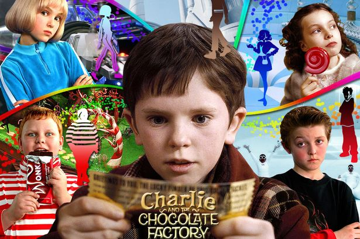

돌아가기
내용1
클래스
아이디
가상요소 선택자 가상요소 선택자 가상요소 선택자 가상요소 선택자 가상요소 선택자 가상요소 선택자 가상요소 선택자 가상요소
선택자 가상요소 선택자 가상요소 선택자 가상요소 선택자 가상요소 선택자 가상요소 선택자 가상요소 선택자 가상요소 선택자
링크 버튼
박스모델1
인라인 태그
position_test
aBcDEfgHiJKlMNop
font_test

안녕하세요. 용사님!
단풍마을의 평온함을 위해 힘쓰고 있는 GM소리입니다.
메이플스토리 가족 여러분께 더욱 안정적인 게임환경을 제공해 드리기 위한
채널점검이 예정되어 안내드립니다.
[작업 일시]
2019년 9월 26일(목) 낮 12시 45분 ~ 오후 1시 45분 (1시간)
[작업 대상]
1) 메이플스토리 전체월드
- 1, 2, 3, 4, 5, 6, 7, 8, 9, 20세 채널 : 낮 12시 45분 ~ 1시 (15분)
- 10, 11, 12, 13, 14, 15, 16, 17, 18, 19채널, 월드 통합 파티 퀘스트 : 오후 1시 ~ 1시 15분 (15분)
- 20, 21, 22, 23, 24, 25, 26, 27, 28, 29채널, 지역 채널 : 오후 1시 15분 ~ 1시 30분 (15분)
2) 스카니아, 루나, 엘리시움 월드
- 30, 31, 32, 33, 34, 35, 36, 37, 38, 39채널 : 오후 1시 30분 ~ 1시 45분 (15분)
[작업 내역]
1) 채널 점검
예정된 시간에 점검을 완료할 수 있도록 최선을 다하겠습니다.
다만, 상황에 따라 완료 시각이 변동될 수 있는 점 미리 양해 부탁드립니다.
원활하고 즐거운 메이플스토리를 만들기 위해 더욱 노력하겠습니다.
고맙습니다
GM소리 올림
AbcDefgHIJk
1 2 3 4 5 6
7 8 9 0
google_font